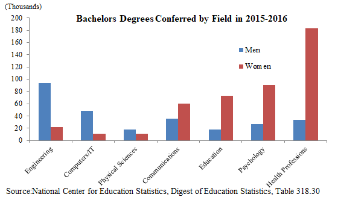
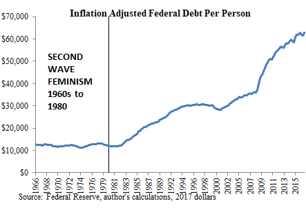

Joseph hails from the epicenter of American feminism - Manhattan. He chronicles the insanity he witnesses as a warning to men everywhere.


The following article was sponsored by Awake: The Return Of Men.
Like many other impressionable young men, I cheered and supported the gender equality movement. That’s what I was taught. But the more life experience I gained the more I began to suspect that there were meaningful differences between the sexes. I began to question the dogma of gender equality. My curiosity led me to read widely across topics in history, evolutionary psychology, biology, and political science. What I learned profoundly altered my worldview. Awake: The Return of Men is a compilation of my findings, and my contribution to our efforts to red-pill the public.

History has largely been a story of men traveling around the world looking to conquer other groups of men. The Romans conquered Europe, the Mongols conquered Central Asia, the British conquered India, and so forth. Men constantly fought each other in the most wretched conditions, with crude weapons and primitive medicine. The defeated men were either killed or forced to adopt the customs of their new rulers.
Today the world is radically different. We protest death penalties for convicted murderers, we hold festivals to celebrate foreign cultures, and we put trigger warnings on Shakespeare just in case someone might be offended.
How does history go from a story of bloody conquest to one of hurt feelings? The answer is that the actors have changed. Historically, men ruled the world. But they relinquished power once they granted women the right to vote. The world has changed because now women rule the world.

Women approach the world differently from men. This is because men and women have been subject to different evolutionary pressures over time. For example, a man’s reproductive success is maximized if he is able to father as many children as possible. This means becoming an alpha male that out competes other men for access to women. As a result, men have evolved to be significantly more competitive and status driven than women. This can be seen in how men are much more willing to endure grueling work hours just to climb the corporate ladder.
In contrast, a woman is limited in the number of children she can have so she would be more reproductively successful if she were able to keep the children she has alive. This is easy today, but very difficult for most of history where there was no running water and frequent famine. Anthropologists estimate that in primitive societies a little more than half of infants reached adulthood. Under these circumstances women who were better at childcare were more reproductively successful. Unsurprisingly, studies show women to be more empathetic and nurturing. Those are traits of good mothers.
Evolutionary psychologists have discovered a number of psychological differences between the sexes. My book contains an extensive list of these difference, but some of them are as follows: on average, men are more hierarchical, group oriented, violent, confident, and respectful of rules. These are characteristics that reflect men’s traditional role of looking out for the community. Throughout history it has always been men who stand together on the battlefield for the sake their people.
Differences between men and women can be clearly seen in childhood when the effects of socialization are limited. At recess boys gravitate towards competitive team sports while girls are sitting with their best friend, sharing secrets and vulnerabilities. The bestselling toys for boys tend to be weapons or violent video games, both used by boys to fight each other. The bestselling toys for girls tend to be dolls, which girls have conversations with and nurture.
Differences in the sexes persist throughout adulthood, as seen clearly in the occupations each sex pursues. Men prefer fields dealing with things, women prefer fields dealing with people. In fact, research has found that this gender occupation gap is stronger in more egalitarian countries like the U.S. and Scandinavia, and weaker in developing countries like India. One reason for this may be that wealthier countries afford their citizens the opportunity to pursue their passions, while people of poorer countries do whatever pays the bills. Men and women have different passions.

These innate differences have huge social implications in a post universal suffrage world. Always and everywhere it has been men who built nations, and women who enjoyed the fruits of civilization. Nation building requires a set of skills that are part of a man’s DNA. Women have literally never built any nation or institution. Yet women today claim equality with men and seek to hold roles traditionally held by men. Their track record in these roles is very poor. This rise of feminism coincides with a profound loss of national cohesion, weakening of the rule of law, and an explosion of public debt.
When men ruled the world they were proud of their culture. The Romans forced the conquered Europeans to speak Latin and adopt Roman customs. When the U.S. emerged victorious from World War II, the U.S. exported American style democracy and capitalism as the best path to national prosperity. But a feminized world instead preaches multiculturalism, where all foreign cultures are celebrated as equal so no one feels left out. This is a vision of the world that reflects feminine insecurity and feminine ideals of equality. Multiculturalism has transformed close knit communities into parcels of land shared by people who have nothing in common with each other.
Men have a fondness of rules that is not seen in women. The games boys play, like baseball or dungeons and dragons, tend to have significantly more rules than the games girls play. Rules are needed because it balances the interests of individuals and those of the group. Institutions built by men, such as the military and church, all have elaborate sets of rules. While men base morality on adherence to rules they agreed upon, women base it on empathy.
To a woman, an action is wrong if it hurts any one. For example, feminists are strong supporters of illegal immigration because they feel sorry for the plight of the third world poor. Feminine empathy makes it difficult to establish the rule of law because women continually demand exceptions for those perceived as vulnerable.
Throughout history men relied on themselves, while women relied on men. It’s in a man’s nature to take responsibility for himself. Before universal suffrage, the U.S. government was run in accordance with this masculine view. In fact, there were no federal welfare programs until the 1930s. After universal suffrage the government began to offer more and more benefits, from public retirement income to health care. Instead of relying on themselves like men, women transformed government into their back-up husband. This has led to an unsustainable growth in public spending and an explosion of national debt that has put the U.S. on a course towards bankruptcy.

Our civilization is crumbling because it is being run by people who were born to manage families, not nations. The only way out of this is for men to awaken and retake the mantle of national leadership.
Awake: The Return of Men documents my journey in understanding the role feminism has played in the decay of Western civilization.
In the book I summarize current research on differences between the sexes, offer explanations as to why these differences evolved, and illustrate how these differences have led to the chaos we see around us. I carefully support my claims with over 100 citations. My journey changed my world; I believe it could do the same for you. Click here to learn more about my book on Amazon.
Free Review Copy
I have a limited number of review copies of my book. If you would like one, send me an email at [email protected]. Let me know if you’d like a Kindle version or paperback and I will email you a coupon code.